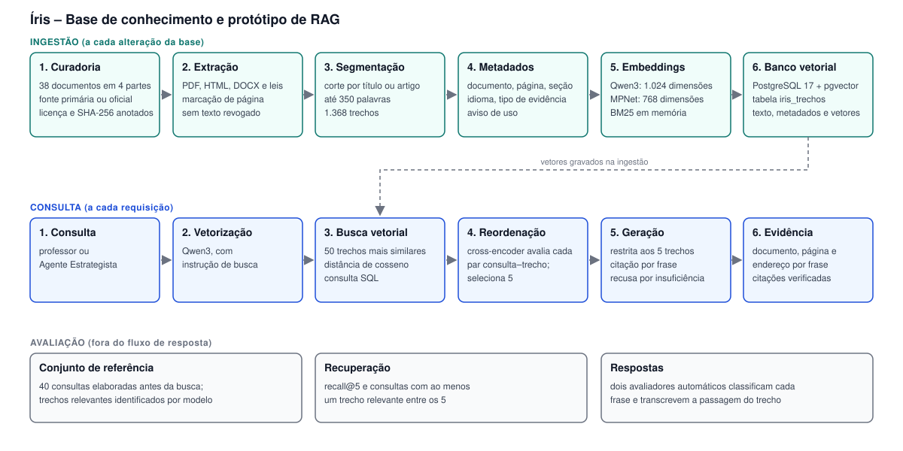

Íris – Documentação de arquitetura da base de conhecimento e do protótipo de RAG
Documento estruturado segundo o modelo arc42. Versão correspondente à entrega de 09/11/2026.
1. Introdução e objetivos
1.1 Requisitos
O componente descrito atende ao Agente Estrategista do Íris, que define a adaptação de uma atividade didática a partir da barreira funcional do estudante. O componente deve:
- recuperar, para uma consulta em português, os trechos mais relevantes de uma base de documentos em português e em inglês;
- gerar resposta restrita ao conteúdo dos trechos recuperados;
- indicar, para cada frase da resposta, o trecho que a sustenta, com documento, página, seção e endereço de origem;
- declarar insuficiência de informação quando os trechos recuperados não respondem à consulta.
1.2 Objetivos de qualidade
| Prioridade |
Atributo |
Descrição |
| 1 |
Qualidade da recuperação |
Os trechos relevantes devem constar entre os cinco entregues ao modelo gerador |
| 2 |
Fundamentação |
Cada afirmação da resposta deve estar contida no trecho citado |
| 3 |
Rastreabilidade |
Cada trecho deve ser identificável até o documento de origem e sua versão |
| 4 |
Reprodutibilidade |
A reexecução dos scripts deve produzir os mesmos resultados |
| 5 |
Privacidade |
Nenhum dado de estudante é armazenado; documentos e consultas não são enviados a serviços externos na etapa de recuperação |
1.3 Partes interessadas
| Parte |
Expectativa |
| Professor (usuário final do Íris) |
Adaptações justificadas por fonte verificável |
| Agente Estrategista (consumidor do componente) |
Cinco trechos com metadados de origem e avisos de uso |
| Equipe de desenvolvimento |
Componente reexecutável, com avaliação automatizada |
| Avaliadores do desafio |
Evidência da qualidade da recuperação, da fundamentação e da rastreabilidade |
2. Restrições
| Tipo |
Restrição |
| Técnica |
Modelos de vetorização e de reordenação executados localmente |
| Técnica |
Servidor de implantação sem GPU |
| Técnica |
Banco de dados relacional PostgreSQL, compartilhado com a aplicação web prevista |
| Legal |
Uso exclusivo de documentos de acesso público; os textos de oito documentos com direitos reservados ou sem licença aberta não são redistribuídos |
| Legal |
Vedação ao armazenamento de dados de estudantes |
| Organizacional |
Nenhum treinamento ou ajuste de modelo no escopo da entrega |
3. Contexto e escopo
3.1 Contexto de negócio
| Elemento externo |
Entrada |
Saída |
| Agente Estrategista |
Consulta (barreira funcional, tipo de atividade, restrição a preservar) |
Cinco trechos com fonte; resposta com citações |
| Fontes documentais (órgãos públicos, sociedades científicas, periódicos) |
Documentos originais |
– |
| Modelo de linguagem gerador |
Instruções, trechos e consulta |
Resposta em texto |
3.2 Contexto técnico
| Interface |
Tecnologia |
Descrição |
consultar.buscar(pergunta, metodo, k, filtro_barreira, filtro_parte) |
Função Python |
Retorna os k trechos com metadados |
gerar.responder(pergunta) |
Função Python |
Executa a recuperação, a geração e a verificação das citações |
| Banco vetorial |
PostgreSQL 17 com pgvector, via psycopg |
Consulta SQL com operador de distância de cosseno |
| Modelo gerador |
API HTTP (Groq) ou Ollama local |
Requisição de geração de texto |
4. Estratégia de solução
| Objetivo |
Abordagem |
| Recuperação em base bilíngue |
Modelo de embeddings multilíngue (Qwen3-Embedding-0.6B) |
| Precisão nas primeiras posições |
Recuperação em dois estágios: busca vetorial de 50 candidatos e reordenação por cross-encoder |
| Fundamentação |
Instruções que restringem a resposta aos trechos e exigem citação por frase; verificação automática das citações |
| Rastreabilidade |
Metadados de origem por trecho; hash do documento original no catálogo |
| Integração futura |
Vetores e metadados na mesma tabela do banco relacional da aplicação |
5. Visão de blocos de construção

Arquivo do diagrama: docs/rag/diagrama_arquitetura.svg.
| Bloco |
Artefato |
Responsabilidade |
| Extração |
rag/iris-rag/scripts/ |
Conversão do documento original em texto, por formato de origem |
| Catálogo |
rag/iris-rag/fontes.json, FONTES.md |
Registro de origem, hash, licença, vigência e qualidade da extração |
| Ingestão |
pacote/ingestao.py |
Limpeza, segmentação e atribuição de metadados; gera chunks.jsonl |
| Vetorização |
pacote/embeddings.py |
BM25, modelos de embeddings e fusão de listas |
| Banco vetorial |
pacote/banco_pg.py |
Criação da tabela, carga e busca por similaridade |
| Banco alternativo |
pacote/indexar.py |
Índice local em Chroma, para execução sem contêiner |
| Recuperação |
pacote/consultar.py |
Métodos de busca, reordenação e filtros |
| Geração |
pacote/gerar.py |
Montagem das instruções, chamada ao modelo gerador e verificação das citações |
| Demonstração |
pacote/demonstrar_resposta.py |
Consulta, trechos, resposta e evidência por frase |
| Avaliação |
pacote/avaliar*.py, pacote/medir_*.py |
Métricas de recuperação e de fundamentação |
6. Visão de tempo de execução
6.1 Ingestão
- O documento original é obtido e o hash SHA-256 é registrado no catálogo.
- O texto é extraído conforme o formato, com marcação de página em documentos PDF.
- O catálogo é consolidado, com marcação de duplicatas e de avisos de uso.
- O texto é limpo e segmentado; cada trecho recebe metadados e um prefixo de contexto.
- Os trechos são vetorizados.
- Trechos, metadados e vetores são gravados na tabela
iris_trechos.
6.2 Consulta
- A consulta é vetorizada pelo modelo Qwen3, com a instrução de busca do modelo.
- O banco retorna os 50 trechos de maior similaridade de cosseno.
- O cross-encoder atribui nota de relevância a cada par consulta–trecho.
- Os cinco trechos de maior nota são selecionados.
- O modelo gerador recebe as instruções, os cinco trechos numerados e a consulta.
- A resposta é verificada: existência dos trechos citados e presença de citação em cada frase.
7. Visão de implantação
| Elemento |
Especificação |
| Ambiente de execução |
Python 3.11; dependências em pacote/requirements.txt |
| Banco de dados |
Contêiner pgvector/pgvector:pg17, porta 5433 no endereço local |
| Modelos |
Obtidos do Hugging Face na primeira execução e mantidos em cache local |
| Modelo gerador |
Serviço externo (Groq) ou execução local (Ollama), selecionado por variável de ambiente |
As variáveis de ambiente constam no README.md do pacote.
8. Conceitos transversais
8.1 Segmentação (chunking)
| Regra |
Valor |
Justificativa |
| Ponto de corte |
Título, artigo de lei ou ponto de verificação do DUA |
Um assunto por trecho |
| Tamanho máximo |
350 palavras |
Contexto de cerca de 1.500 palavras para cinco trechos |
| Tamanho mínimo |
40 palavras |
Agregação de trechos com pouca informação |
| Sobreposição |
Último parágrafo do trecho anterior; caput em textos legais |
Continuidade entre trechos |
| Quadros |
Uma página por trecho |
Preservação da relação entre linhas e colunas |
| Prefixo de contexto |
Documento: <título> \| Seção: <seção> |
Identificação da origem no texto vetorizado |
Resultado: 1.368 trechos; mediana de 215 palavras e de 360 tokens. Vinte por cento dos trechos excedem 508 tokens e são truncados pelos modelos com limite de 512 tokens; quatro trechos excedem o limite de 1.024 tokens do Qwen3.
8.2 Embeddings
| Mecanismo |
Modelo |
Dimensões |
Uso |
| Qwen3 |
Qwen/Qwen3-Embedding-0.6B |
1.024 |
Primeiro estágio do método adotado |
| MPNet multilíngue |
paraphrase-multilingual-mpnet-base-v2 |
768 |
Alternativa avaliada |
| BM25 |
– |
– |
Referência lexical; componente da busca híbrida |
| Reordenação |
cross-encoder/mmarco-mMiniLMv2-L12-H384-v1 |
– |
Segundo estágio do método adotado |
Sessenta e sete por cento dos trechos estão em inglês e as consultas são formuladas em português, o que torna obrigatório o suporte multilíngue.
Cada trecho registra identificador, documento, parte da base, idioma, tipo de evidência, título, órgão, ano, endereço de origem, licença, seção, página inicial e final, temas, barreiras funcionais relacionadas e aviso de uso. O catálogo registra o hash SHA-256 do documento original.
8.4 Avisos de uso
O campo nao_usar_para restringe a finalidade de citação de um trecho, e o campo nota_uso descreve a restrição. O aviso é transmitido ao modelo gerador com o trecho.
8.5 Recusa
Quando os trechos não respondem à consulta, o modelo gerador retorna uma frase fixa de insuficiência de informação. A verificação automática identifica a recusa.
8.6 Esquema do banco
A tabela iris_trechos contém uma linha por trecho, com chave primária chunk_id, colunas de metadados tipadas, as colunas vetoriais vec_mpnet vector(768) e vec_qwen3 vector(1024), índices HNSW com distância de cosseno em cada coluna vetorial, índice sobre doc_id e índice GIN sobre barreiras.
No volume atual, o otimizador do PostgreSQL executa leitura sequencial com ordenação, equivalente à busca exata; os índices HNSW não são utilizados.
9. Decisões de arquitetura
| ID |
Decisão |
Alternativas consideradas |
Justificativa |
Estado |
| D1 |
PostgreSQL com pgvector como banco vetorial |
Chroma; FAISS |
Trechos, metadados e vetores no banco relacional da aplicação; filtro e busca na mesma consulta |
Adotada |
| D2 |
Segmentação pela estrutura do documento |
Janela de tamanho fixo |
Preserva um assunto por trecho e permite citar artigo de lei ou ponto de verificação isoladamente |
Adotada |
| D3 |
Qwen3-Embedding-0.6B no primeiro estágio |
MPNet multilíngue; BM25; busca híbrida |
Maior recall@5 entre os mecanismos isolados (0,28, ante 0,20 do BM25 e 0,11 do MPNet) |
Adotada |
| D4 |
Reordenação por cross-encoder sobre 50 candidatos |
Sem reordenação; reordenação sobre 20 candidatos |
Recall@5 de 0,42, ante 0,28 e 0,36 |
Adotada |
| D5 |
Execução local dos modelos de recuperação |
Embeddings por API externa |
Documentos e consultas não saem do ambiente; ausência de custo por requisição |
Adotada |
| D6 |
Manutenção dos documentos no idioma original |
Tradução automática para o português |
Preserva a citação literal e evita erro de tradução em números e termos técnicos |
Adotada |
| D7 |
Citação obrigatória por frase, com verificação automática |
Citação ao final da resposta |
Permite rastrear cada afirmação ao trecho de origem |
Adotada |
10. Requisitos de qualidade
| Atributo |
Cenário |
Medida |
Resultado |
| Qualidade da recuperação |
Consulta com resposta na base |
Recall@5 |
0,42 (IC 95%: 0,32 a 0,52) |
| Qualidade da recuperação |
Consulta com resposta na base |
Consultas com ao menos um trecho relevante entre os cinco |
33 de 38 |
| Fundamentação |
Frase de conteúdo da resposta |
Frases sustentadas pelo trecho citado, para dois avaliadores |
161 de 187 (86%) |
| Rastreabilidade |
Citação na resposta |
Citações de trecho inexistente |
0 de 211 frases |
| Recusa |
Consulta sem resposta na base |
Recusas |
2 de 2 |
| Reprodutibilidade |
Reexecução da demonstração |
Arquivo de saída idêntico |
Atendido |
| Desempenho |
Consulta com reordenação, em computador portátil com GPU integrada |
Tempo por consulta |
463 ms |
O protocolo de medição consta em docs/rag/avaliacao.md.
11. Riscos e dívida técnica
| Item |
Descrição |
Tratamento previsto |
| Validação humana ausente |
Conjunto de referência e avaliadores são modelos de linguagem |
Validação de amostra por avaliador humano |
| Modelo gerador |
Respostas avaliadas com modelos distintos do configurado no protótipo; modelo gerador do produto não definido |
Definição do modelo e reavaliação |
| Cobertura da base |
Recall@5 de 0,26 em consultas de prática docente |
Inclusão de fontes voltadas à prática docente |
| Formato de consulta |
Consultas avaliadas simulam perguntas de professores |
Avaliação com o formato do Agente Estrategista |
| Posição dos trechos no contexto |
Efeito da ordem dos cinco trechos sobre a resposta não avaliado; os trechos são entregues na ordem de relevância do segundo estágio |
Avaliação com permutação da ordem dos trechos |
| Desempenho em CPU |
Tempo de reordenação não medido em servidor sem GPU |
Medição no ambiente de implantação |
| Truncamento |
20% dos trechos excedem o limite de 512 tokens do reordenador |
Monitoramento; sem efeito mensurado sobre o recall |
| Granularidade das barreiras |
Barreiras funcionais atribuídas por documento |
Atribuição por trecho |
| Cobertura temática |
Poucos documentos sobre dislexia e transtorno do espectro autista |
Ampliação da base |
12. Glossário
| Termo |
Definição |
| RAG |
Geração aumentada por recuperação: geração de texto condicionada a documentos recuperados de uma base |
| Trecho (chunk) |
Segmento de documento indexado como unidade de busca |
| Embedding |
Representação vetorial de um texto |
| Cross-encoder |
Modelo que avalia conjuntamente consulta e trecho e atribui nota de relevância |
| Recall@k |
Fração dos trechos relevantes presente entre os k primeiros retornados |
| BM25 |
Função de ordenação por correspondência lexical |
| HNSW |
Índice de busca aproximada de vizinhos mais próximos |
| DUA |
Desenho Universal para a Aprendizagem |
| Aviso de uso |
Metadado que restringe a finalidade de citação de um trecho |